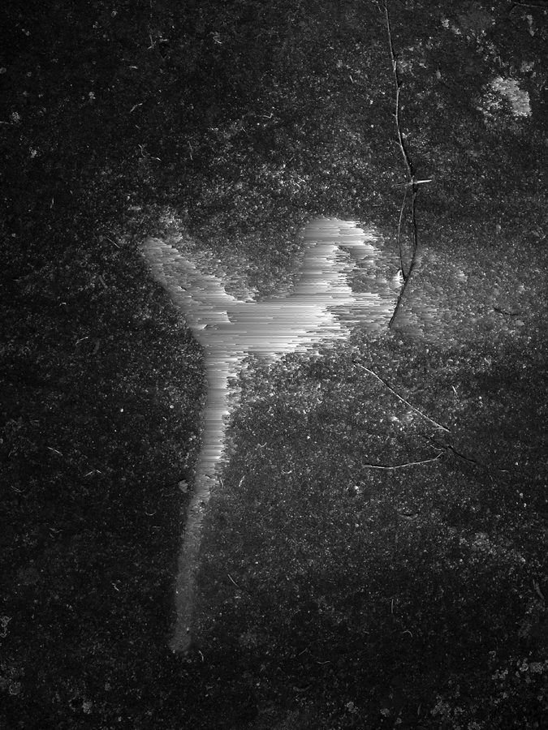
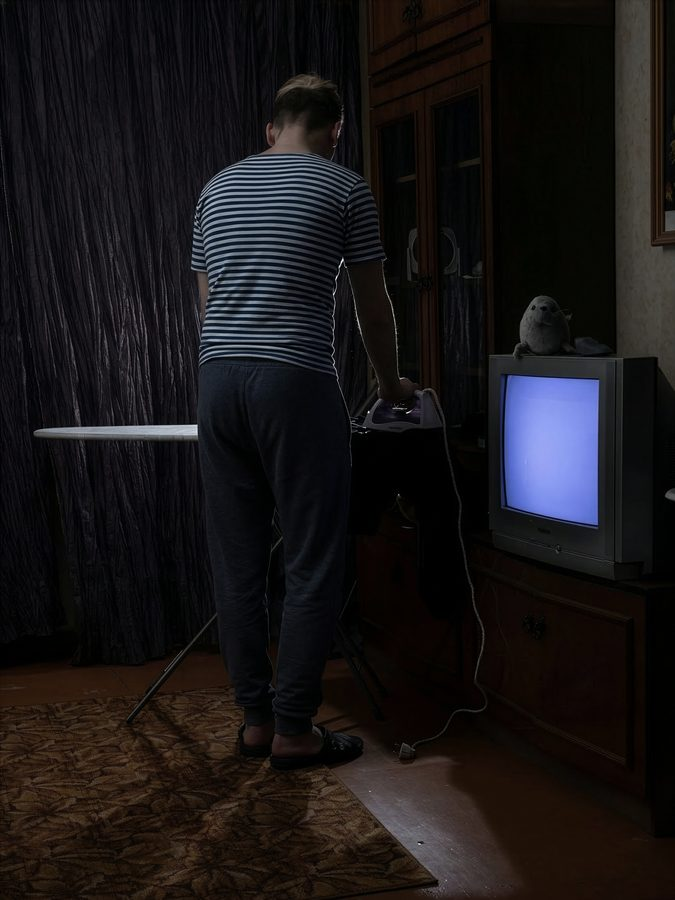
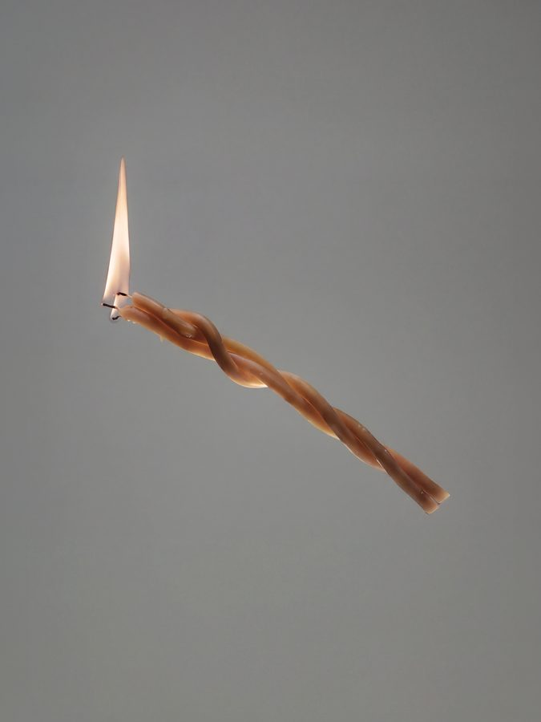
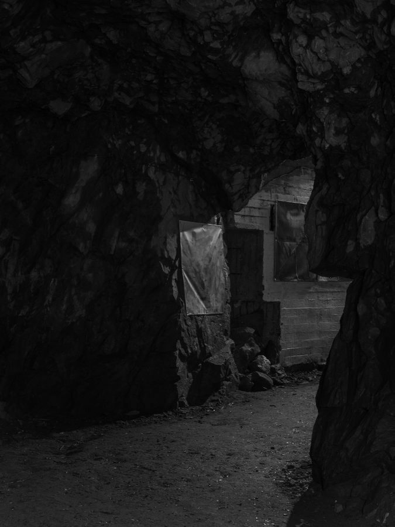
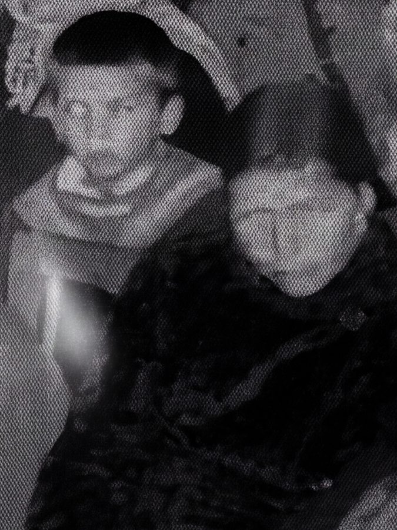
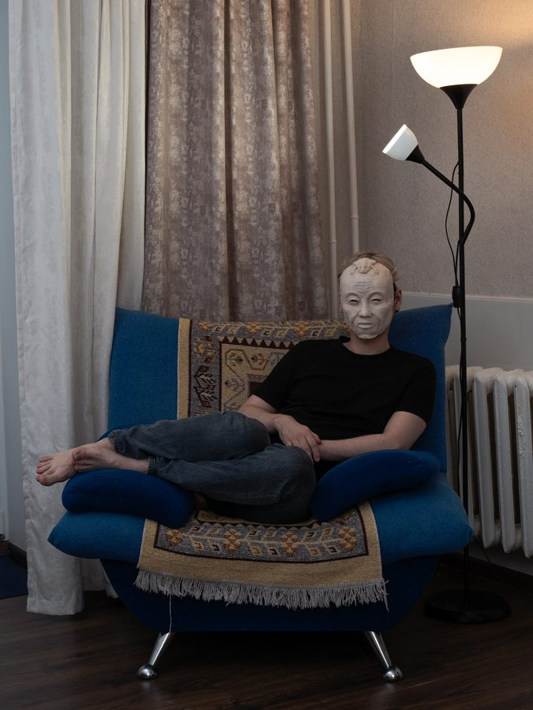
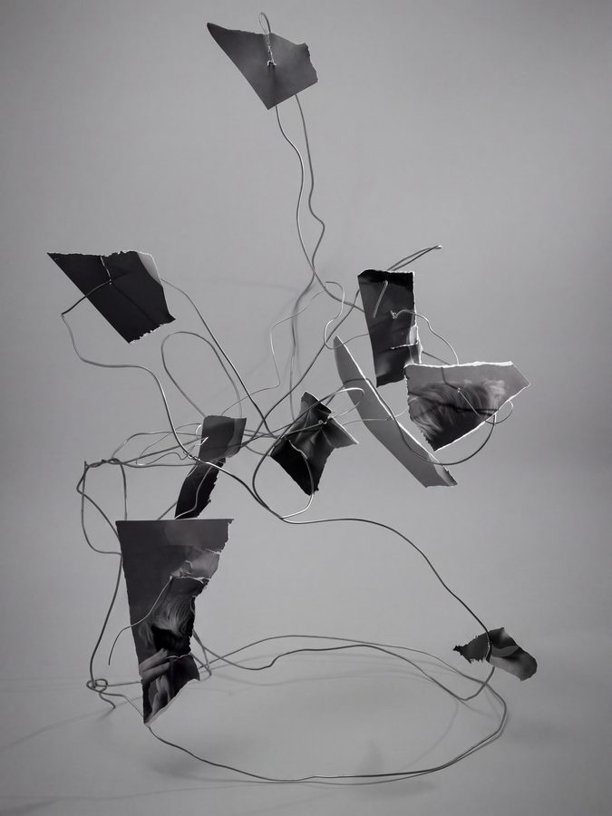

Thank God
You're Leaving


You could say I am living my life. You could say life is living me. Since childhood, I’ve had the feeling that it isn’t me looking at the world, but the world looking at me. The gaze of the world is enchanting and gentle. It is wrathful and angry.
I fall apart under that gaze: building blocks, books by Arkady Gaidar, my first love, my second love and the third one. And then those pieces fall back together.
You could say I am going somewhere. You could say I am being led somewhere. The feeling of being led has been familiar to me since childhood. I am being led towards my first lover, my second lover, the third one. The gazes of my lovers are enchanting and gentle. Wrathful and angry.
I fall apart under their gazes: fear and fury, tenderness and sadness. One lover once said to me, ‘It’ll be fun and scary. It’ll hurt, and it’ll be funny.’




There was a funeral service shop close to my house. Winters were cold, so my friend and I often stopped by to warm up and take a look at the coffins. We would examine them and choose our favorite, then go back outside to build snow forts.
One day I said to my friend, ‘Let’s make a coffin,’ and he loved the idea. We dug a hole big enough for the two of us in the snow, climbed inside and realised that the coffin lid was missing. We took a big piece of black cellophane from the dumpster. We lay down in our snow coffin and covered ourselves with it.
We stayed there for a while, hugging. I could feel his breath warming my cold cheeks. We promised each other that we would always be friends, no matter what happened.





One year before our divorce my wife was lying on the floor. Around her gathered several women, a paramedic and a gray‑haired intensive care doctor. She had angioedema.
My wife was lying naked. Empty adrenaline syringes were lying next to her, three or four of them. The women asked her to stay conscious. There were visible surgical scars in her armpits.
The doctor asked, ‘Has she had her breasts done?’ I said, ‘Yes.’
The only elevator in our building was very narrow. Two people inside it would feel like a crowd. The paramedic, one of the neighbors and I squeezed in, holding my wife in our arms to get her to the ambulance. Her body was bent at a sharp angle, an endotracheal tube sticking out of her mouth.
They took her away at night. The next evening she was already near me in our flat. We lay down on the bed. She asked, ‘We’ll always be together, won’t we?’ I said, ‘Yes, we’ll always be together.’





I remember the early days of spring most clearly from my childhood. When my father came home, I’d run off for a walk. I wouldn’t feel like seeing any of my friends. I would go to a vacant lot next to an abandoned construction site. There were lots of puddles and clay marked with tire tracks.
I would find a stick and stir up the puddles. The rising mud looked like explosions. As the mud settled, outlines emerged. I imagined they were national borders. With my stick I would create ‘good’ and ‘bad’ countries that went to war with each other.
The countries expanded and shrank. Some would conquer territory, then give it back, unable to hold on to it. By the end of my game, all that remained was a mess, with no ‘good’ or ‘bad’ countries. I would throw the stick far away and leave.




I grew up in the Urals, near Sverdlovsk. My town had three swamps, three factories. And forest all around.
My parents worked a lot. My mother would come back home when it was already dark outside. Hearing her heels clicking outside the door, I would feel lightheaded. I learned to distinguish that sound from any other.
My father was a truck driver. I could go months without seeing him.
My dad was a detached person. To me, he seemed unapproachable. I never knew what he was thinking. But I knew the sound his belt buckle made. He had kind eyes. I loved them. I have my father’s eyes.
Whenever he was getting ready to leave yet another time, I cried: ‘Thank God you’re leaving.’ I used to take his striped sailor’s shirt to put it next to my pillow.
Everything around me seemed eternal.
- Medium
- Photography / Autofiction
- Year
- 2026
- Status
- Ongoing project